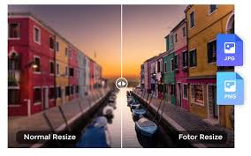

Educación superior en el Perú
Inicio
Carreras
Contacto
ISIL - Título principal
Carreras profesionales
Tecnología e Innovación
Arquitectura
Conoce más
Fecha límite de inscripción
Noticias ISIL
Nuevo programa de innovación
ISIL lanza un programa enfocado en tecnología e innovación.
Galería

Ejemplos de formato de texto
Texto en cursiva
Texto con énfasis
Texto en negrita
Importante en negrita
Resaltado
Subrayado
Código en línea